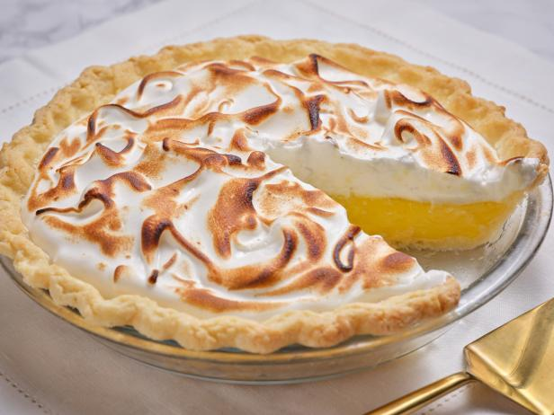

Lemon Meringue Pie Recipe

Description
Want a recipe guaranteed to satisfy the whole family? Lemon meringue pie's got your back!
This pie's got enough kick to satisfy those with even the fiercest of sweet tooths.
Ingredients
Lemon Filling
-
1 Cup
White Sugar
-
2 tbsp
All Purpose Flour
-
3 tbsp
Corn Starch
-
1/4 tbsp
Salt
-
1 1/2 Cups
Water
-
2
Juiced and Zested Lemons
-
2 tbsp
Butter
-
4
Beaten Egg Yolks
-
1
9-inch Pie Crust
Meringue
-
4
Egg Whites
-
6 tbsp
White Sugar
Steps
Lemon Filling
-
Preheat your oven to 175°C/350°F.
-
Whisk together the white sugar, all-purpose flour, cornstarch, and salt in a saucepan.
-
Stir in the water, lemon juice, and lemon zest into the saucepan.
-
Cook this mixture over medium-high heat whilst stirring frequently until it comes to a boil.
-
Stir in the butter into the boiling mixture.
-
Place the egg yolks in a separate bowl.
-
Grab a 1/2 cup of the hot saucepan mixture and slowly whisk it into the egg yolks.
-
Once thoroughly mixed, add the egg yolk mixture into the saucepan.
-
Bring the saucepan to a boil whilst stirring frequently until the mixture thickens.
-
Remove the saucepan from the heat and pour the mixture into the baked pie shell.
Meringue
-
Whip the egg whites in a large bowl until foamy.
-
Gradually add the sugar in small amounts whilst whipping.
-
COntinue to whip until stiff peaks form.
-
Spread the meringue over the lemon filling on the pie crust.
-
Bake the pie until the meringue is golden brown (~10 minutes).
Make sure to let your pie cool once it's done baking, and enjoy!